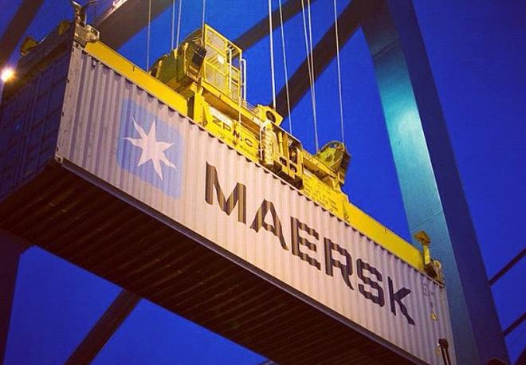
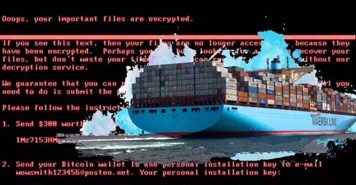

1. Introducción
En junio de 2017, un ransomware relacionado con Petya, denominado NotPetya por Kaspersky, comenzó a propagarse a nivel mundial, afectando a cerca de 2000 organizaciones, principalmente en Ucrania. Entre las más impactadas se encontró la empresa naviera Maersk, cuyos sistemas críticos fueron comprometidos, provocando la interrupción total de sus operaciones y generando graves consecuencias operativas y económicas. El presente documento analiza de forma crítica el ataque de ransomware NotPetya que afectó a Maersk, evaluando las condiciones de ciberseguridad previas, los factores que facilitaron el incidente y su impacto, así como su relación con marcos normativos. Además, contextualiza el caso en el entorno latinoamericano para extraer lecciones aplicables y proponer medidas concretas, como la gestión de parches, planes de respuesta a incidentes y la alineación progresiva con estándares internacionales, orientadas a fortalecer la seguridad de la información en la región.
2. Contexto general del ataque
En 2017, el ciberataque NotPetya, originado en el contexto del conflicto geopolítico entre Rusia y Ucrania, provocó un impacto global sin precedentes al paralizar la logística y el transporte marítimo de la multinacional Maersk, afectando severamente la cadena de suministro internacional. Este desastre fue facilitado por una postura de ciberseguridad interna sumamente debilitada, donde destacaba el uso de sistemas operativos obsoletos y sin soporte, como servidores con Windows 2000, sumado a una nula segmentación de red y la falta de implementación de planes de fortalecimiento previamente detectados. El éxito del ataque se basó en una combinación crítica de fallas: técnicamente, el malware explotó la vulnerabilidad EternalBlue para propagarse velozmente por una red plana que carecía de respaldos adecuados; a nivel humano, la infección se activó en la filial ucraniana mediante el software fiscal comprometido M.E.Doc y el robo de credenciales de proveedores. Finalmente, el trasfondo político del incidente confirmó que el objetivo principal era el sabotaje económico a gran escala, transformando una herramienta de ciberguerra regional en una crisis financiera corporativa de dimensiones históricas para Maersk.
3. Línea del tiempo
Antes del ataque, Ucrania ya se encontraba en un contexto de alta tensión geopolítica. En 2010, Viktor Yanukovych asumió la presidencia del país, pero tras la Revolución de Euromaidán en febrero de 2014 huyó de Ucrania. Un mes después, en marzo de 2014, Rusia anexó Crimea por la fuerza. A nivel técnico, el escenario se agravó cuando en abril de 2017 el grupo Shadow Brokers filtró EternalBlue, una herramienta de la NSA, lo que permitió en mayo de 2017 la propagación global del ransomware WannaCry, evidenciando el riesgo de este exploit.
La preparación del ataque NotPetya ocurrió de forma silenciosa. Antes de junio de 2017, el software fiscal ucraniano M.E.Doc ya había sido comprometido mediante un backdoor. El 22 de junio de 2017 se distribuyó la última actualización aparentemente legítima, aunque el acceso malicioso ya estaba activo. Este software era utilizado por aproximadamente el 80 % de las empresas en Ucrania, convirtiéndolo en un vector de infección altamente efectivo.
El ataque se ejecutó el 27 de junio de 2017 a las 10:30 UTC (13:30 EEST), cuando se liberó la actualización maliciosa de M.E.Doc. En cuestión de minutos, la infección se propagó a bancos, aeropuertos, empresas energéticas y dependencias gubernamentales ucranianas. Entre 13:00 y 14:00 UTC, NotPetya alcanzó a A.P. Moller–Maersk a través de su oficina en Odesa, provocando fallas simultáneas en terminales portuarias, grúas y accesos; camiones quedaron detenidos y 17 terminales resultaron afectadas casi al mismo tiempo.
Alrededor de las 14:00 UTC, el centro de monitoreo de Maersk detectó un comportamiento anómalo descrito como un “silencio ilógico” en la red, perdiendo visibilidad global desde el Reino Unido. Aproximadamente dos horas después del inicio del ataque, la empresa tomó la decisión crítica de desconectar completamente su red global para evitar una mayor propagación.
En los días posteriores, 17 de los 76 puertos internacionales de Maersk permanecieron paralizados y los empleados comenzaron a operar manualmente utilizando papel, WhatsApp y Gmail. Durante más de una semana, las operaciones globales no alcanzaron un nivel normal de funcionamiento, y casi dos semanas después, las computadoras personales fueron devueltas gradualmente a los empleados.
La fase de recuperación fue extensa. En aproximadamente 10 días, Maersk logró reconstruir desde cero cerca de 4,000 servidores y 45,000 PCs. Sin embargo, la recuperación completa de la infraestructura y las operaciones tomó casi dos meses.
3. Evidencia y material multimedia
Capturas del proceso


Video demostrativo
5. Tabla técnica del ataque
| Elemento | Descripción |
|---|---|
| Tipo de ataque | Malware destructivo (wiper) disfrazado de ransomware. Sobreescribe el MBR (Master Boot Record) y cifra la MFT (Master File Table), provocando una destrucción irreversible de datos y sistemas. |
| Actor o grupo atacante | Sandworm (Grupo de hackers militares rusos vinculados al GRU, Inteligencia Militar de la Federación Rusa). |
| Vector de entrada | Actualización de software comprometida del programa M.E.Doc (Software de contabilidad ucraniano utilizado para declaraciones fiscales). |
| Vulnerabilidad explotada | CVE-2017-0144 (EternalBlue, vulnerabilidad en el protocolo SMBv1 de Windows para ejecución remota de código), EternalRomance (otra explotación SMB); Mimikatz para extracción de credenciales de memoria (LSASS), Sistemas no parcheados y obsoletos. |
| Etapas del ataque (MITRE ATT&CK) |
|
| Sistemas o servicios comprometidos | Servidores Windows, 45,000 PCs y laptops, 1,200 aplicaciones críticas de negocio, red global interna, sistemas de reserva de envíos (Maerskline.com), terminales portuarias (17 de 76 afectadas, incluyendo grúas y puertas), bases de datos ERP, comunicaciones sincronizadas con Microsoft Outlook. |
| Duración del incidente | Desde el 27 de junio de 2017 (aprox. 10:30 UTC, inicio de la intrusión global) hasta la restauración total (aprox. 2 meses después, con reconstrucción de red en 10 días y operaciones a pleno rendimiento en 6-8 semanas). |
| Mecanismos de detección y respuesta | Detección: Inicialmente confundido con fallo eléctrico después confirmado por mensajes de rescate masivos. Respuesta: Desconexión inmediata de la red global (2 a 7 horas). Reconstrucción completa del Active Directory mediante el traslado físico de un disco duro desde una oficina en Lagos, Nigeria (único controlador sobreviviente por un apagón local). Reinstalación masiva de 45k equipos. |
6. Cálculo del costo total del ciberataque
| Tipo de costo | Descripción | Estimación (MXN) |
|---|---|---|
| Pérdidas operativas | Se paralizaron 17 de los 76 puertos internacionales de Maersk y los sistemas de reservación de envíos quedaron fuera de servicio. | No se cuenta con un aproximado de la pérdida económica, pero se calcula que se perdió el 20% de los volúmenes de envíos en los puertos, siendo la mayor pérdida de la empresa. Los puertos eran su fuerte. |
| Daños reputacionales | Durante el ataque quedaron afectados los servicios donde se registraba toda la logística, Maersk tuvo que recurrir a compensar los pagos a los clientes por el caso de la carga perdida, carga dañada y las interrupciones lógicas. | No se cuenta con un aproximado de los clientes afectados, pero a cada cliente afectado se le dio una compensación de millones de dólares (alrededor de siete cifras). |
| Costos técnicos | Maersk después del ataque tuvo que hacer una reconstrucción completa de su red, con alrededor de 4,000 servidores y 45,000 computadores personales. | Se estima que el precio de levantar los servidores y las computadoras personales ascienden los $1,714,000,000 de pesos, ya que hasta la fecha no se cuenta con una cifra oficial. |
| Costos legales / regulatorios | Se utilizó un centro de emergencia en el Reino Unido donde se tenían 600 trabajadores y consultores trabajando simultáneamente. | De acuerdo con los cálculos realizados con prácticas comunes de cálculo de perdidas en Seguridad de TI se llegó a la estimación de una pérdida de $428,000,000. |
| Pago de rescate o extorsión | Se contrató a la firma consultora Deloitte para llevar a cabo un proceso de recuperación de sus servidores y computadoras personales. | No se cuenta con una cifra exacta sobre las consultas realizadas por Deloitte pero se llegó a la estimación de $428,000,000 pesos de acuerdo con cálculos hechos con consultoras y respuestas. |
| TOTAL ESTIMADO | De acuerdo al CEO de Maersk, Jim Hagemann Snabe, se estimó que las pérdidas estimada monetaria ronda entre los 250 y 300 millones de dólares lo cual lo empleados consideran que la cifra está subestimada pero no proporcional a un monto alternativo. |
250-300 millones USD $4,469,375,000.00 - $5,363,250,000.00 millones de pesos (de acuerdo con el valor del peso mexicano frente al dólar según el Diario Oficial de la Federación, para el 27 de junio del 2017). |
El impacto de NotPetya en Maersk fue desproporcionado: la pérdida de hasta 300 millones de USD ($5,363 MDP) superó con creces el presupuesto anual de ciberseguridad del sector logístico en 2017, que apenas rondaba el 3% al 5% del gasto total en TI. Mientras que el presupuesto preventivo se enfocaba en defensas perimetrales básicas, el ataque obligó a una reconstrucción total de la infraestructura (4,000 servidores y 45,000 PC), cuyo costo técnico de $1,714 MDP por sí solo ya equivalía a años de inversión planificada. En concreto, el ataque representó un "gasto reactivo" que triplicó lo que la empresa habría invertido en protección anual, evidenciando que el costo de la resiliencia post-incidente es masivamente superior a cualquier presupuesto de defensa operativa de la época.
7. Relación con marcos normativos
El incidente no fue una falla aislada, sino una cascada de fallos en controles preventivos. La organización operaba bajo una arquitectura de red plana que permitió que un compromiso en un software de terceros escalara a una denegación de servicio global. En cuanto a la relación con los marcos normativos tenemos:
| Escenario de Riesgo | Falla Técnica Observada | Control Relacionado (ISO/NIST) | Impacto Normativo | Recomendación De Remediación |
|---|---|---|---|---|
| Ataque a Cadena de Suministro | Infiltración vía actualización de software contable | ISO 27001 A.15.1: Política de seguridad en las relaciones con proveedores. | Incumplimiento de debida diligencia técnica sobre software de terceros. | Implementar entornos de prueba para toda actualización de software antes de producción. |
| Movimiento lateral | Red plana que permitió propagación de Ucrania a centros de datos globales. | NIST CSF PR.AC5: Segmentación de red y control de flujo de comunicaciones. | Violación de principios de resiliencia y contención de amenazas. | Desplegar arquitectura de Microsegmentación basada en perfiles de riesgo y criticidad. |
| Escalamiento de privilegios | Extracción de hashes/tokens de administrador en memoria RAM. | ISO 27001 A.9.4: Gestión de acceso privilegiado | Compromiso total del Directorio Activo. | Implementar Privileged Access Management (PAM) y restringir credenciales administrativas. |
| Persistencia y Ejecución | Explotación de protocolo SMBv1 (EternalBlue) no parchado. | NIST CSF PR.IP-12: Gestión de vulnerabilidades y ciclo de vida de parches. | Negligencia en el mantenimiento preventivo de infraestructura crítica. | Establecer SLAs de parcheo de “Emergencia” (< 24 hrs) para vulnerabilidades críticas. |
| Pérdida de Disponibilidad | Cifrado de controladores de dominio y backups conectados a la red. | ISO 27001 A.12.3/GDPR Art. 32: Copias de seguridad y resiliencia | Incumplimiento del derecho a la disponibilidad de datos personales. | Implementar la regla de respaldo 3-2-1 con almacenamiento inmutable y fuera de línea. |
8. Lecciones aprendidas y recomendaciones
El ataque a Maersk demostró que debilidades técnicas como sistemas obsoletos (Windows 2000) y redes no segmentadas pueden escalar hasta un colapso sistémico global. Fallas críticas como la nula gestión de parches, el abuso de credenciales privilegiadas y la falta de control sobre proveedores convirtieron una actualización de software en un vector de entrada masivo. Para mitigar estos riesgos, habría sido vital aplicar el principio de mínimo privilegio, implementar monitoreo de tráfico interno y mantener respaldos fuera de línea para asegurar la recuperación de datos ante desastres.
En México y Latinoamérica, ante presupuestos limitados e infraestructura heredada, es urgente priorizar la actualización de sistemas bajo marcos internacionales como el NIST. Las recomendaciones clave incluyen diversificar proveedores para proteger la cadena de suministro, capacitar al personal y crear planes de respuesta a incidentes locales. En conclusión, el caso Maersk redefine la ciberseguridad como un pilar estratégico indispensable, y no un gasto, para garantizar la resiliencia operativa frente a amenazas avanzadas que trascienden fronteras.
9. Reflexión técnica
El caso NotPetya–Maersk confirma que la ciberseguridad es vital para la continuidad operativa en un mundo interconectado. En América Latina, donde la brecha digital y el uso de sistemas desactualizados son retos comunes, la resiliencia no debe ser opcional. Para fortalecer nuestra región, es imperativo implementar acciones como modernizar la infraestructura crítica, es decir, priorizar la actualización de sistemas legacy y la gestión de parches para cerrar brechas que el software obsoleto deja abiertas; así como también la segmentación y respaldos, es decir, Implementar la división de redes y copias de seguridad offline, soluciones de alta eficacia y bajo costo para protegerse ante el secuestro de datos y por último pero no menos importante, aplicar cultura de prevención en PyMEs, capacitando al capital humano y auditando a proveedores locales, asegurando que el eslabón más débil de la cadena de suministro no sea la puerta de entrada para ataques globales.
10. Referencias técnicas
- Columbia University. (2022). NotPetya: A case study of a state-sponsored cyberattack. School of International and Public Affairs (SIPA). https://www.sipa.columbia.edu/sites/default/files/2022-11/NotPetya%20Final.pdf
- Cybersecurity & Infrastructure Security Agency. (2017, 1 de julio). Petya ransomware (Alert ICS-17-181-01C). U.S. Department of Homeland Security. https://www.cisa.gov/newsevents/ics-alerts/ics-alert-17-181-01c
- IBM X-Force. (s.f.). Petya-NotPetya ransomware campaign [Colección de intercambio]. IBM Cloud. https://exchange.xforce.ibmcloud.com/collection/Petya-NotPetya-RansomwareCampaign-9c4316058c7a4c50931d135e62d55d89
- National Institute of Standards and Technology. (2024). The NIST Cybersecurity Framework (CSF) 2.0 (NIST CSWP 29). U.S. Department of Commerce. https://nvlpubs.nist.gov/nistpubs/CSWP/NIST.CSWP.29.pdf
- Diario Oficial de la Federación. (2017). Tipo de cambio y tasas de interés: Valor del dólar 2017. Secretaría de Gobernación. https://www.dof.gob.mx/indicadores.php#gsc.tab=0